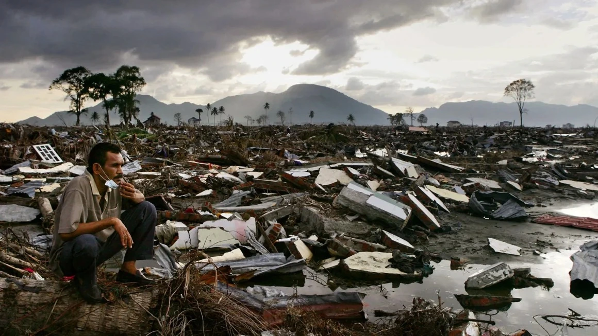
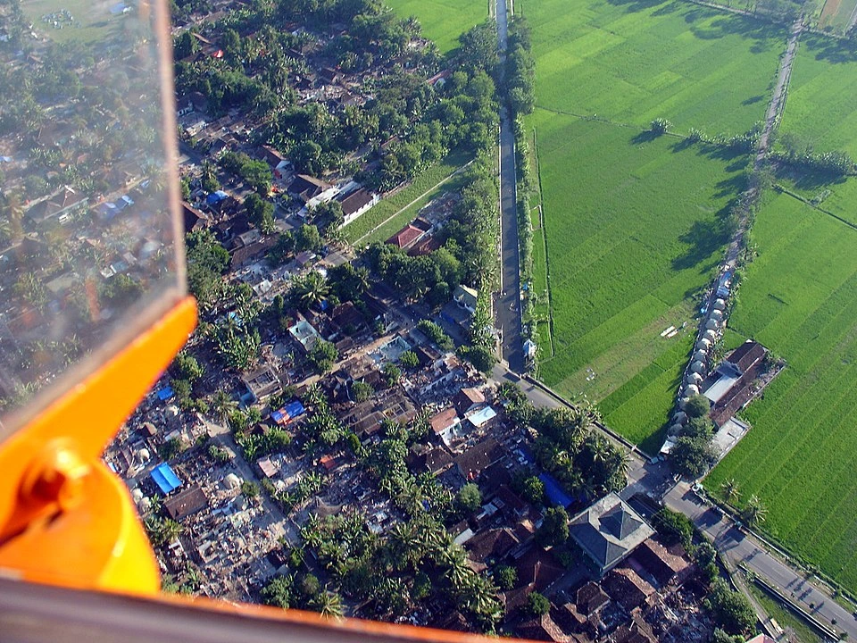
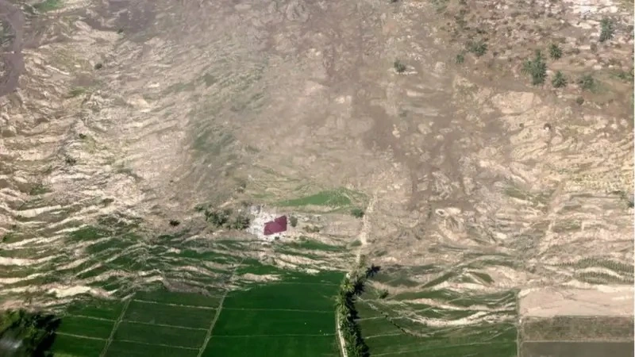

El USGS (Servicio Geológico de Estados Unidos) es responsable del Earthquake Hazards Program, que monitorea e informa sobre movimientos telúricos, además de evaluar sus impactos y riesgos. Los resultados de su monitoreo son compartidos mediante Real-time Notifications, que pueden consultarse en distintos formatos.
Entre los compartidos está el GeoJSON Summary Format, que es actualizado a cada minuto y tiene una estructura (Output) que se explica en su página oficial. Aprovechando la
explicación de la estructura (Output), y lo ya preparado en este código fuente, que entra al features:[] para obtener
los datos, podemos visualizar lo que sigue:
| place | time | mag | tsunami |
|---|
Registros sobre 3.9 M del último mes, comparado con Japón y Rusia
Indonesia, ubicada en el llamado "Anillo de Fuego del Pacífico", es uno de los países más sísmicamente activos del mundo. Su posición en la convergencia de cuatro placas tectónicas principales la hace especialmente vulnerable a terremotos devastadores que han marcado su historia y moldeado su cultura de preparación ante desastres.

El 26 de diciembre de 2004, Indonesia experimentó uno de los desastres naturales más devastadores de la historia moderna. Un terremoto de 9,1 de magnitud sacudió el océano Índico frente a la costa de Sumatra, generando un tsunami masivo que cobró la vida de más de 230.000 personas en 14 países. Solo en Indonesia, se estima que murieron más de 170.000 personas, principalmente en la provincia de Aceh.
Apenas dos años después, el 27 de mayo de 2006, un terremoto de 6,3 de magnitud golpeó cerca de Yogyakarta en la isla de Java. Aunque de menor intensidad, este sismo ocurrió en una zona densamente poblada, causando más de 5.700 muertes y dejando a más de 200.000 personas sin hogar. La tragedia reveló la vulnerabilidad de las construcciones locales ante eventos sísmicos.

El 28 de septiembre de 2018, la ciudad de Palu en la isla de Célebes fue devastada por un terremoto de 7,5 de magnitud. Lo inusual de este evento fue que desencadenó un fenómeno de licuefacción del suelo, donde áreas enteras del terreno se comportaron como líquido, tragándose edificios y casas completas. El tsunami posterior, con olas de hasta 6 metros de altura, arrasó la costa. El balance final: más de 4.300 muertos y miles de desaparecidos.

Más recientemente, el 21 de noviembre de 2022, un terremoto de 5,6 de magnitud sacudió Cianjur en Java Occidental. A pesar de su magnitud relativamente menor, su poca profundidad (apenas 10 kilómetros) lo hizo extremadamente destructivo, causando más de 330 muertes y dejando a 73.000 personas desplazadas.
Estos eventos han transformado a Indonesia en un líder mundial en sistemas de alerta temprana de tsunamis y en la construcción de infraestructura resistente a terremotos. La memoria colectiva de estas tragedias impulsa constantes mejoras en la preparación y respuesta ante desastres. Para conocer más sobre la actividad sísmica en otros países del Pacífico, puedes consultar los trabajos sobre Chile, Japón y Filipinas.
USGS Earthquake Hazards Program:
https://earthquake.usgs.gov/
Britannica - 2004 Indian Ocean Tsunami:
https://www.britannica.com/event/Indian-Ocean-tsunami-of-2004
Wikipedia - Indonesia:
https://es.wikipedia.org/wiki/Indonesia
Terremoto Indonesia: Los mayores seísmos de su historia: https://www.lavanguardia.com/internacional/20120411/54284301541/terremoto-indonesia-mayores-seismos-historia.html
EL TERREMOTO Y POSTERIOR TSUNAMI DEL 26 DE DICIEMBRE DE 2004 EN INDONESIA: https://www.reuters.com/world/asia-pacific/
Terremoto de Lombok de agosto de 2018: https://es.wikipedia.org/wiki/Terremoto_de_Lombok_de_agosto_de_2018
CNN - 20 años del tsunami más mortífero de la historia: https://cnnespanol.cnn.com/2024/12/26/mundo/fotos-tsunami-oceano-indico-2004-trax